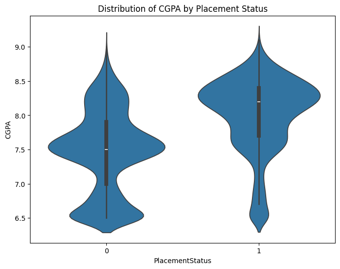
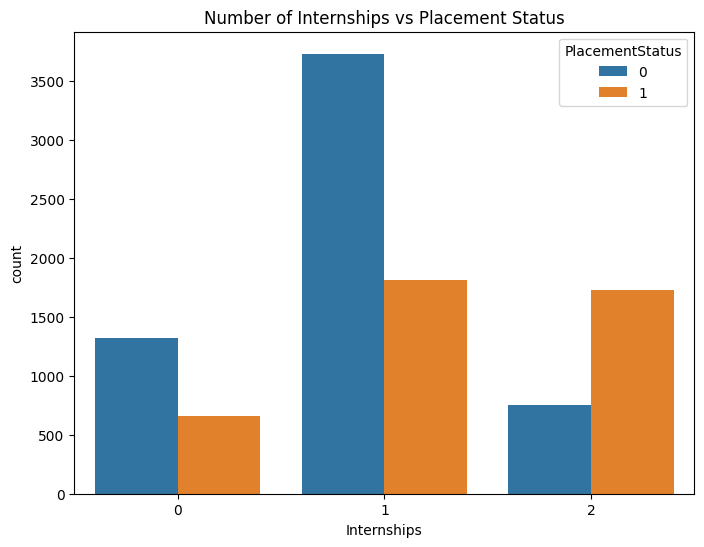
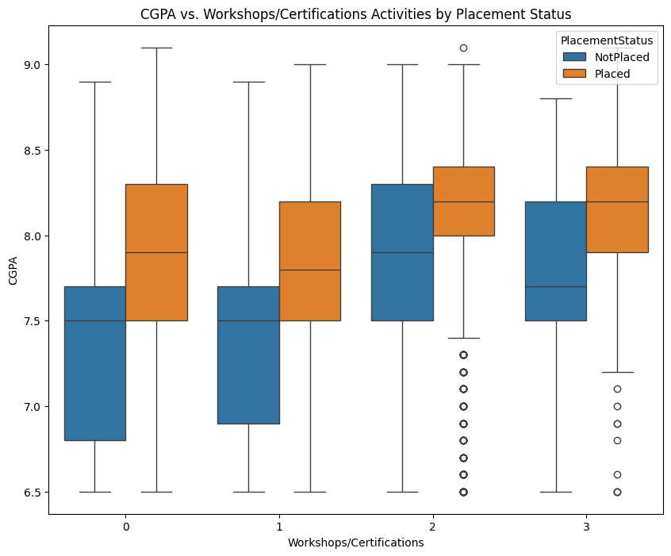
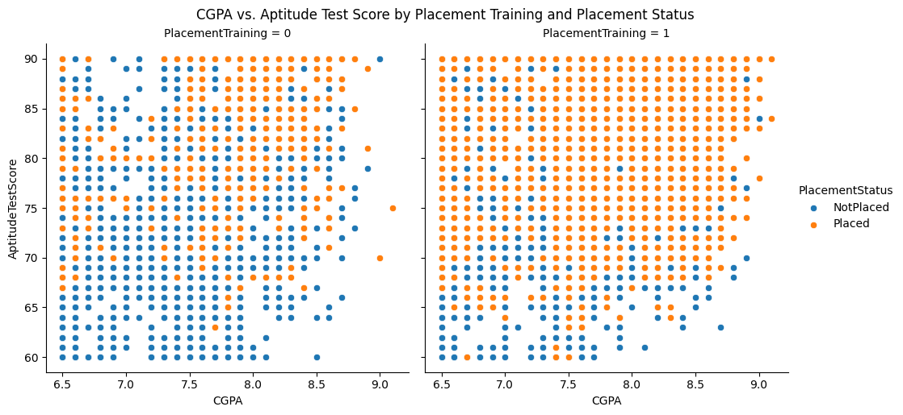

Dataset: placementdata.csv
Code: https://colab.research.google.com/drive/14lnenBLGiu09F8tMpl7oUHXWQZz1FMnS?usp=sharing
Introduction
So, I really wanted an internship. I was looking over some placement datasets and my eyes fell on this. Not only this was cleaned (I hate cleaning both on datasets and IRL), but, also had some good features. I was also reading a book on Interpretable Machine Learning and wanted to test permutation importance on some dataset.
Dataset
This dataset contains information about the students academic and training and placement status. These were the following features: CGPA, Internships, Projects, Workshops/Certifications, ApptitudeTestScore, SoftSkillrating, ExtraCurricularActivities, PlacementTraining, SSC and HSC and finally, PlacementStatus
Analysis
EDA
First of all, Some Basic EDA,
CGPA vs Placement Status
Those who got placed had higher CGPA than those who didn't.
Woah!!! What an insight, No one could have guessed it. Also, I have noticed that there are not much people around 7 CGPA, both in placed and not placed data. Maybe, there is a bias in the data or maybe there are not much people who have got around 7 CGPA.
Number of Internships vs Placement Status
This might feel weird but in India, Most of the colleges force students to have internships and if a student didn't interned, he might loose credits. So, what students in India do if they couldn't get interned at any startup is, get fake internship certificates(or even pay to get interned). That's the reason why, there are more students who are not placed even after having internships.
CGPA vs Workshops/Certifications vs Placement Status
There is no much difference between a student who got placed with certificate and without any certificates. The only thing mattered here is CGPA.
CGPA vs Placement Training vs Aptitude Score vs Placement Status
 This shows Placement Training really matters if we had a good CGPA and Aptitude Score. Placement Training are provided by the college itself to ace the placements. This means, we get to know the tips and tricks of placements before placements itself. I feel this is a really important feature.Soft Skills vs Placement Training vs Internships vs Placement Status (Interactive Plot)
Try this below interactive plot to understand the relationship between Soft Skills, Placement Training, Internships and Placement Status.Prediction
The first thing i tried on the above dataset is
lightgbm.
This is the perfect model to try on datasets that are linearly unseperable. I got a 79.2% accuracy with lighgbm.
But,
my main goal with this dataset was Permutation Importance. I wanted to look at which features are more important for Placement Status. The Random Forest itself has a `feature importance` feature, but, they doesn't handle correlated features well. This is where permutation importance comes in, which even though is computationally expensive than Random Forest, handles correlation issues better.
Result:
This is absolutely right because getting an high score in aptitude tests will always matter whether we did projects or internships.
Well, Everyone knows that having good aptitude score means higher chance of getting placed. But, what happens if i remove aptitude score? Let's, Try it out.
Projects matter a lot. But, why was Extracurricular Activities so high with Aptitude Score but not without it? It could mean two things:
- Either there is a significant correlation between Aptitude Score and Extracurricular Activities
- Or, When "Aptitude Test Score" was present, the model might have heavily relied on it because it's a strong, potentially single, numerical indicator. It could have been capturing a significant portion of the signal related to candidate quality that was also reflected in "Extra Activities" and "Workshops."
The Extracurricular Activites could also mean participating in events, conferences like IEEE and getting to know a lot of people which in turn may help them get a referral.
What happens if i remove the Extracurricular Activites itself? Again, Projects matter a lot. CGPA also matters. The correlation between Projects and CGPA, Projects and Workshops/Certification, Projects and Extracurricular Activities are high. This means, "Aptitude Score," "Workshops/Certifications," "Projects" and "Extracurricular Activities" could all be indicators of a general trait like "academic engagement".
"Projects" might also mean "applied skills" which could be an unique feature which helped a student get placed. Maybe that's the reason why, "Projects" is high even though, Aptitude Score was not present.
Conclusion
Do more Projects, Get a high score in Aptitude tests and have interest in your subject to get placed.